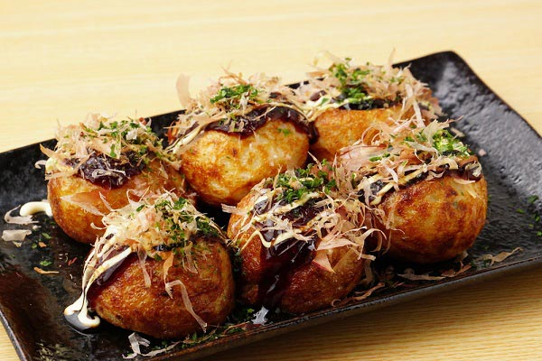

รายละเอียดของทาโกะยากิ (Takoyaki)
ทาโกะยากิเป็นอาหารญี่ปุ่นที่ทำจากแป้งที่ผสมกับกุ้ง, ปลา, และผัก ใส่ลงในแม่พิมพ์กลมแล้วทอดจนกรอบ มักจะเสิร์ฟพร้อมกับซอสทาโกะยากิ, มายองเนส, และแห้งคาโบนา.
ประวัติ: ทาโกะยากิมีต้นกำเนิดจากเมืองโอซาก้าในญี่ปุ่นในช่วงต้นศตวรรษที่ 20 โดยเริ่มเป็นที่นิยมในรูปแบบปัจจุบันเมื่อประมาณปี 1935.
การเตรียม: การทำทาโกะยากิเริ่มต้นด้วยการเตรียมแป้งและส่วนผสมที่ต้องการ เช่น กุ้ง, ปลา, และผัก จากนั้นจะเทแป้งลงในแม่พิมพ์กลมและทอดจนกรอบ.